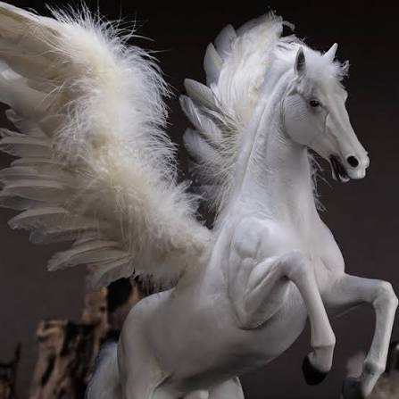

🐎 Кто такой Пегас?
Пегас — мифическое существо, изображаемое как прекрасный белоснежный конь с большими крыльями. Он считается символом свободы, скорости, вдохновения и благородства. Легенды о Пегасе пришли из древнегреческой мифологии, где он помогал героям и богам.
✨ Внешний вид
- 🤍 Белоснежная шерсть.
- Огромные белые крылья.
- 👀 Добрые голубые глаза.
- 💪 Сильное тело.
- ✨ Иногда изображается с сияющей гривой.
🌍 Где живёт?
По легендам Пегас живёт высоко в облаках, на вершинах гор или в волшебных долинах. Он любит просторное небо и может преодолевать огромные расстояния за очень короткое время.
⭐ Способности
- Летает быстрее ветра.
- ☁️ Поднимается выше облаков.
- 💨 Очень быстрый.
- ✨ Приносит удачу героям.
- 🌈 Символизирует надежду и свободу.
- 💪 Очень выносливый.
📜 История
В древнегреческих мифах Пегас помогал героям совершать великие подвиги. Со временем он стал символом вдохновения для художников, поэтов и писателей.
📖 Интересные факты
- 📚 Пегас — один из самых известных мифических коней.
- 🎨 Его часто изображают на картинах и в книгах.
- 🎬 Пегас появляется во многих фильмах, мультфильмах и играх.
- ☁️ Его имя стало символом полёта и мечты.
- 🌟 Во многих историях Пегас помогает только добрым людям.
💡 Заключение
Пегас — символ свободы, красоты и смелости. Хотя он является мифическим существом, его образ вдохновляет людей уже многие тысячи лет.